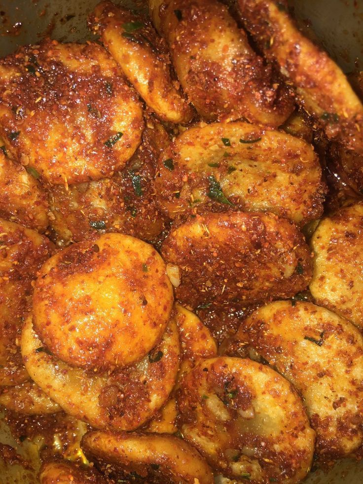

Website Resep Makanan
1. Cirambay Pedas

Bahan :
- 400 Gram tepung kanji/Tapioka
- 3 Sdm tepung terigu
- Garam secukupnya
- 350 Ml air mendidih
- 8 Lembar daun jeruk nipis, Di iris halus
- 3 Siung bawang putih, Geprek cincang halus
- Minyak secukupnya
- Cabai bubuk
- Bumbu penyedap rasa bawang
Cara Membuat :
- Untuk membuat minyak bawang, panaskan minyak secukupnya, masukkan daun jeruk, tumis hingga layu. Tambahkan bawang putih, tumis hingga wangi dan agak kering. Sisihkan.
- Aduk rata semua bahan dan tuangkan air sedikit demi sedikit. Jika sudah tidak terlalu panas, uleni adonan dengan tangan hingga adonan bisa digilas dan dibentuk.
- Bentuk bulatan, lalu gilas tipis. Baluri dengan tepung kanji dan cetak dengan gilingan atau dipotong dengan pisau memanjang.
- Panaskan minyak di wajan lain dengan api sedang.
- Masukkan Cirambay, goreng sebentar atau setengah matang. Angkat dan tiriskan.
- Masukkan cirambay ke dalam mangkuk, tuangkan minyak bawang, dan bumbu tabur. Aduk-aduk, dan cirambay siap disajikan.
2. Maklor

Bahan :
- 50 Gram Makaroni
- 1 Butir telur
- 1 Sdm minyak sayur
- 2 Gelang air
- 1 Sdm bumbu keju instan
- Secukupnya cabe bubuk
- Sejumput garam
Cara Membuat :
- Rebus Makaroni dengan 2 gelas air matang/mentah +-7 menit sampai Makaroni empuk
- Berikan 1 sendok minyak agar tidak lengket
- Ambil 1 butir telur, Masukkan garam, kocok lepas
- Siapkan telfon anti lengket, Masukkan Makaroni yang telah matang
- Siram dengan telur, Jika telur sudah mengering bisa dibalik
- Masak sampai telur matang lalu angkat
- Taburkan dengan bubuk keju dan cabe bubuk sesuai selera, Aduk sampai bumbu merata, Sajikan selagi hangat.
3. Cipak Koceak

Bahan :
- 250 Gram tepung kanji/Tapioka
- 125 Gram tepung terigu
- 1 Bungkus bawang putih bubuk
- 1 Batang daun bawang di iris
- Garam secukupnya
- Kaldu bubuk rasa ayam
- Air panas secukupnya
- Minyak untuk menggoreng & Minyak panas secukupnya
- 30 Gram cabai rawit kering
- 2 Bungkus bawang putih bubuk
- 2 Buah limau (bisa ditambah jika suka lebih asam)
Cara Membuat :
- Blender cabai rawit kering sampai halus. Setelah itu, campur semua bahan kering jadi satu. Aduk rata. Lalu siram dengan minyak panas. Aduk rata kembali, kemudian beri perasan jeruk limau, aduk lagi, lalu sisihkan
- Buat cipak: campur semua bahan lalu masukan air panas sedikit demi sedikit sambil terus diaduk. Setelah itu, lanjut diuleni dengan tangan. Bentuk adonan bulat lalu gepengkan dengan cara menghimpit bulatan aci dengan kedua tangan. Lakukan sampai habis, panaskan minyak. Lalu goreng aci sampai agak kering/matang.
- Kalau mau lebih enak lagi cipaknya bisa diisi pakai ayam rebus yang diblender beri sedikit garam atau juga boleh pakai sosis, atau apapun sesuai selera.